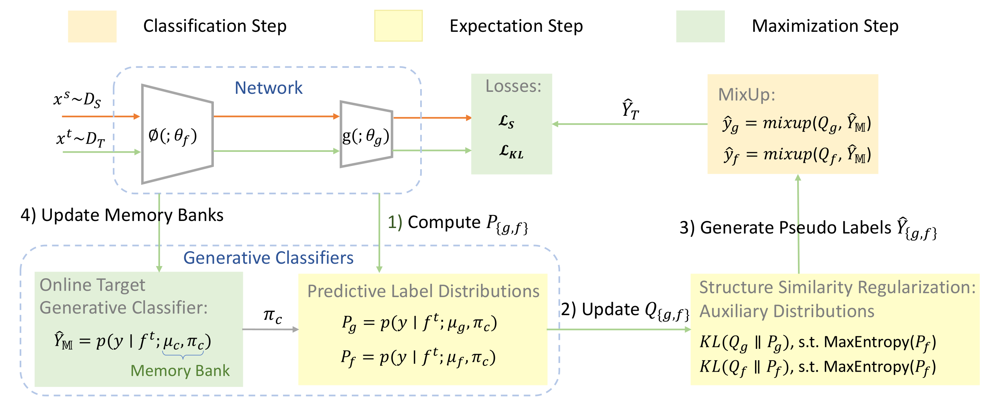

Domain adaptation (DA) aims to transfer knowledge from a fully labeled source to a scarcely labeled or totally unlabeled target under domain shift. Recently, semi-supervised learning-based (SSL) techniques that leverage pseudo labeling have been increasingly used in DA. Despite the competitive performance, these pseudo labeling methods rely heavily on the source domain to generate pseudo labels for the target domain and therefore still suffer considerably from source data bias. Moreover, class distribution bias in the target domain is also often ignored in the pseudo label generation and thus leading to further deterioration of performance. In this paper, we propose GeT that learns a non-bias target embedding distribution with high quality pseudo labels. Specifically, we formulate an online target generative classifier to induce the target distribution into distinctive Gaussian components weighted by their class priors to mitigate source data bias and enhance target class discriminability. We further propose a structure similarity regularization framework to alleviate target class distribution bias and further improve target class discriminability. Experimental results show that our proposed GeT is effective and achieves consistent improvements under various DA settings with and without class distribution bias.

@InProceedings{Zhang_2023_ICCV,
author = {Zhang, Can and Lee, Gim Hee},
title = {GeT: Generative Target Structure Debiasing for Domain Adaptation},
booktitle = {Proceedings of the IEEE/CVF International Conference on Computer Vision (ICCV)},
month = {October},
year = {2023},
pages = {23577-23588},
}